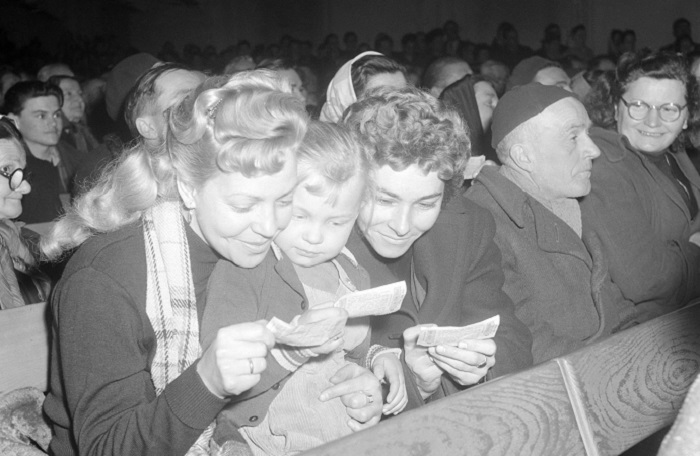

Aki a kicsit nem becsüli...
A lottó történetének legkisebb telitalálatát 1980. május 21-én Tomasovszki György gépkocsivezető érte el. A 18, 38, 45, 66, 90-es számsorral egyedüli nyertesként 394 396 forintot nyert a lottó Nemzetközi Olimpiai Sportlottó sorsolásán. A férfi a sajtónak büszkélkedett friss szerencséjével és a hivatásával: 15 évig dolgozott gépkocsivezetőként és mindig balesetmentesen vezetett. 1980-ban a benzinár 6 és 7 forint közt volt, így Tomasovszky úr telitalálatos nyereményéből akár 60 ezer liter benzint is vehetett volna. De György másra szánta a pénzt: régi álmát váltotta valóra, amikor a nyereményből két barátjával együtt kiutaztak a moszkvai nyári olimpiára. Az ő története azt is bizonyítja: még a legkisebb lottóötös is valóra váltja nyertesének régóta dédelgetett vágyait.
A legnagyobb nyertes
Majd 38 hét telitalálat-mentes időszak után született meg a valaha volt legnagyobb Ötöslottó-nyeremény Magyarországon. Az 5 milliárd 92 millió 890 ezer 758 forintot 2003. év 48. játékhetében a 4, 15, 46, 49, 59 számokkal nyerte meg egy játékos. És ha jól gazdálkodott mesés nyereményével, mára akár a leggazdagabb magyarok között tarthatnánk számon, persze, ha ismernénk kilétét. A lottó és főleg a lottómilliomosok története mindenkit érdekelt, és a ’60-as, ’70-es években a média igyekezett kielégíteni ezt a híréhséget. Ma már furcsa, de az akkori nyertesek jelentős része büszkén vállalta a nevét és a szerencséjét a nagyvilág előtt. Ennek legfőbb oka azonban az volt, hogy így biztosabb volt a kisnyeremények kifizetése. Ugyanis az akkori feldolgozási rendszerben az a játékos, aki a nevét és címét is felírta a fogadási szelvényére, a saját bizonylata elvesztése esetén is megkapta az 5000 forint alatti nyereményét.